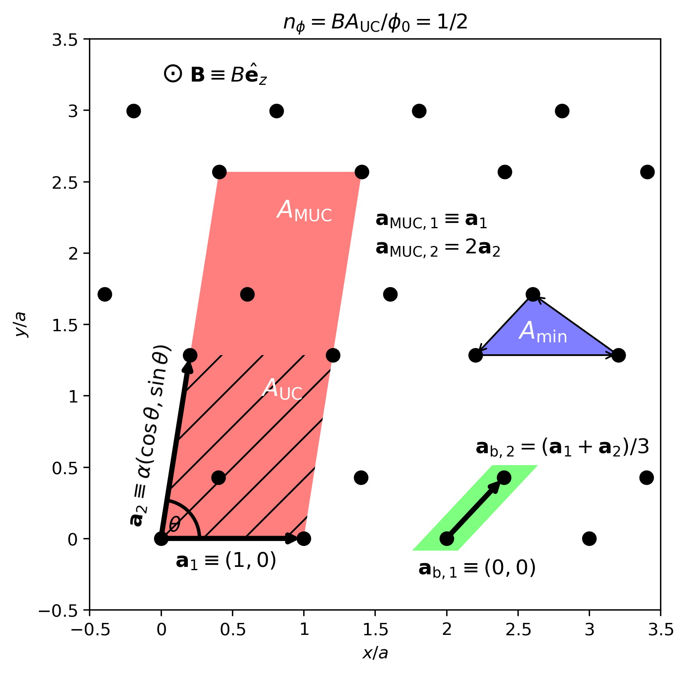

Model
We consider a system of non-interacting quantum particles hopping on a lattice in the xy-plane and coupled to a gauge field. For the sake of concreteness, we discuss electrons of charge \(-e\) and mass \(m_\mathrm{e}\) in this section, governed by a 2D tight-binding model and coupled to a perpendicular magnetic field \(\mathbf{B}=B\hat{\mathbf{e}}_z\). However, the theory is readily generalizable.
The generalized Hofstadter model describing the electron motion is given by
where \(\langle \dots \rangle_\kappa\) denotes \(\kappa\)-th nearest neighbors on some regular Euclidean lattice (defined below) with corresponding hopping amplitudes \(t_\kappa\), \(e^{\mathrm{i}\theta_{ij}}\) is the Peierls phase acquired by hopping from site \(i\) to site \(j\), and \(c^{(\dagger)}\) is the electron (creation)annihilation operator [Azbel64, Harper55, Hofstadter76]. We note that a set of nearest neighbors in HofstadterTools is defined as a set of sites that are equidistant from an origin site, i.e. a group of points that lie on a circle.
The Peierls phase is the lattice-analogue of the Aharonov-Bohm phase and is given as
where \(\phi_0\) is the flux quantum, \(\mathbf{A}\) is the vector potential, and \(\mathrm{d}\mathbf{l}=(\mathrm{d}x,\mathrm{d}y)\) is an infinitesimal line element from site \(i=(X_i, Y_i)\) to site \(j=(X_j, Y_j)\) [Peierls33]. There is freedom in choosing the vector potential, such that \(\mathbf{B} = \nabla \times \mathbf{A} = B\hat{\mathbf{e}}_z\).
Note
Although there is freedom in choosing the vector potential, there may be strategy involved. Several investigations define an artificial Cartesian coordinate system to set up the Harper equation, instead of constructing separate equations for the basis sites [Oh00]. For example, for the honeycomb lattice with lattice constant \(a\), physicists often define the coordinates \((x,y)=(mb,nc)\), where \(b=a/2\) and \(c=\sqrt{3}a/6\) [Andrews20]. The advantage of this approach is that it allows you to address every site on the lattice using a single discrete coordinate system. In order to construct the Harper equation, we then eliminate one of these coordinates using the plane wave ansatz, and are left with a difference equation in the remaining direction. If it is not possible to construct a discrete coordinate system in one direction because, for example, the ratio of site spacings is irrational, then it is strategic to choose the vector potential in the orthogonal direction. Moreover, when the Harper equation is defined using such artificial coordinates, then the gauge may have an impact on the periodicity of the spectrum. The simplest example of this is for the nearest-neighbor Hofstadter model on the triangular lattice with \(b=a/2\) and \(c=\sqrt{3}a/2\). A vector potential with a magentic unit cell extended in the x-direction yields an aperiodic spectrum, when \(n_\phi=BA_\mathrm{UC}/\phi_0\), whereas a vector potential with a magnetic unit cell extended in the y-direction yields a periodic spectrum (try it!). We note that when addressing the lattice in terms of unit cells and basis sites, as in HofstadterTools, the vector potential is a genuine gauge choice with no unintended side-effects. Nevertheless, inspired by this observation, since our \(\mathbf{a}_1=(a, 0)\) vector is fixed, our angle \(\theta\) is defined in the positive direction, and hence a discrete coordinate system in the x-direction is generally impossible to construct for the underlying Bravais lattice, we work with the Landau gauge in the y-direction, with conserved \(k_x\) momentum.
In HofstadterTools, we choose Landau gauge in the y-direction, with a conserved \(k_x\) momentum, such that \(\mathbf{A}=-By\hat{\mathbf{e}}_x\). We note that this is sometimes referred to as Landau gauge in the x-direction, depending on whether you are referring to the dimensions of the magnetic unit cell or the components of the vector potential. Parameterizing the expression for the Peierls phase allows us to write
which reduces to
where \(\Delta X = X_j - X_i\) and \(\Delta Y = Y_j - Y_i\). Notice that this expression depends on absolute y-coordinates but only relative x-coordinates. The effect of the Peierls transformation is that it enlarges the unit cell (UC) of dimensions \(1\times 1\) to a magnetic unit cell (MUC) of dimensions \(1\times q\). The lattice translation operators then form the magnetic translation group [Zak64]. We note that although the dimensions of the MUC is a gauge choice, its area, \(q\), is not.
In the Hofstadter model, the magnetic field strength is often expressed in terms of a flux density \(n_\phi\). Typically, this density is defined with respect to the UC area \(A_\mathrm{UC}\), such that \(n_\phi=B A_{\mathrm{UC}}/\phi_0\). However, this is not always the case. In cases where the minimal area enclosed by electron hopping \(A_\mathrm{min}\) is smaller than \(A_\mathrm{UC}\) or an effective UC area spanned by the hopping terms, then it is necessary to define the flux density with respect to \(A_\mathrm{min}\) in order to guarantee the correct periodicity and reveal the entire spectrum. For example, for the nearest-neighbor Hofstadter model on the triangular lattice we have \(A_\mathrm{UC}=a^2\) but \(A_\mathrm{min}=a^2/2\), and so we need to define \(n_\phi=B A_{\mathrm{min}}/\phi_0\) in order to reveal the entire spectrum. This equates to dividing the flux density by a periodicity factor of 2.
Note
Alternatively, the periodicity of the spectrum may be recovered by performing a unitary transformation of the wavefunctions in the Schrödinger equation. This is sometimes referred to a Rammal transformation [Rammal85]. For the sake of simplicity, we have made the decision not to enforce periodicity in this way in HofstadterTools.
Following a suitable definition of \(n_\phi\), we can substitute this into our expression for the Peierls phase. Since the Peierls factor is a complex phase factor, we consider rational flux densities \(n_\phi=p/q\), where \(p\) and \(q\) are coprime integers. Moreover, since the denominator of the flux density \(q\) is the MUC area in units of UCs, there will ultimately be \(N_\mathrm{b}q\) bands in the spectrum, where \(N_\mathrm{b}\) is the number of sites in the basis.
{kind=link}
In the figure above, we show an example lattice annotated with the relevant unit cells. This figure also serves to define the variables in HofstadterTools. We construct a lattice by repeating some basis in multiples of the Bravais vectors \(\mathbf{a}_1=(a,0)\) and \(\mathbf{a}_2=\alpha a (\cos\theta, \sin\theta)\), where \(\alpha\) and \(\theta\) (not to be confused with the Peierls phase) are measures of the Bravais lattice anisotropy and obliqueness, respectively. In addition, the Bravais lattice has a collection of \(N_\mathrm{b}\) basis sites at positions \(\{\mathbf{a}_\mathrm{b}\}\) relative to the UC origin. The UC is defined as the span of \(\{\mathbf{a}_1, \mathbf{a}_2\}\) and the MUC is defined as the span of \(\{\mathbf{a}_{\mathrm{MUC},1}, \mathbf{a}_{\mathrm{MUC},2}\}\), where \(\mathbf{a}_{\mathrm{MUC},1}=\mathbf{a}_1\) and \(\mathbf{a}_{\mathrm{MUC},2}=q\mathbf{a}_2\). If the appropriate hoppings exist, there may be a distinct minimal hopping plaquette area \(A_\mathrm{min}\), as shown in the example. By choosing the lattice constant, anisotropy, obliqueness, and a set of basis vectors, we can construct any regular Euclidean lattice.